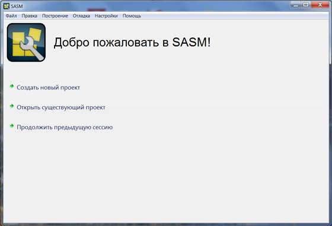
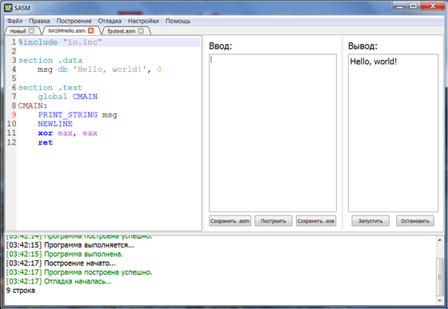

SASM
SASM (SimpleASM) - simple Open Source crossplatform IDE for NASM assembly language. SASM has syntax highlighting and debugger. The program works out of the box and is great for beginners to learn assembly language. SASM is translated into Russian and English. Licensed under the GNU GPL v3.0. Based on the Qt.
SASM (SimpleASM) - простая кроссплатформенная среда разработки на языке ассемблера NASM с подсветкой синтаксиса и отладчиком. В SASM Вы можете легко разрабатывать и выполнять программы, написанные на языке ассемблера NASM. Вводите код в форму и запускайте приложение. Программа работает "из коробки" и хорошо подойдет для начинающих изучать язык ассемблера. Основана на Qt. Распространяется по свободной лицензии GNU GPL v3.0.

Скачать для WindowsСкачать для Linux
О программе
В SASM Вы можете легко разрабатывать и выполнять программы, написанные на языке ассемблера NASM. Вводите код в форму и запускайте приложение. В Windows также возможен запуск приложения в отдельном окне. Входные данные указывайте в поле "Ввод". В поле "Вывод" Вы сможете увидеть результат работы программы. При этом все сообщения и ошибки компиляции будут выводиться в форму снизу. Вы можете сохранять исходный или скомпилированный (exe) код программы в файл, а также загружать свои программы из файла, нажимая на соответствующие кнопки. Если вы хотите прервать выполнение программы (например, при зацикливании), нажмите кнопку "Остановить".
Программа поддерживает работу с несколькими проектами – новые файлы открываются и создаются в новых вкладках. При выходе из программы текущий набор документов сохраняется. При следующем запуске Вы сможете восстановить предыдущую сессию, нажав на кнопку "Продолжить предыдущую сессию" на стартовом окне. В параметрах Вы можете выбрать автоматическое продолжение предыдущей сессии. Также в параметрах настраивается положение поля код и текст, отображающийся при создании нового файла.
Стандартное меню "Правка" дополнено возможностью комментирования/раскомментирования выделенного куска кода и печати/удаления отступа в 4 пробела (Tab/Ctrl+Tab).
<В SASM вы можете находить ошибки в своих программах с помощью отладчика gdb.
В программу включена библиотека макросов "io.inc". В ней есть команды ввода-вывода, макрос - точка входа CMAIN и CEXTERN для доступа к внешним функциям языка C, одинаковые для всех платформ. Подробнее о ее командах Вы можете узнать здесь.

Windows
В качестве компилятора для NASM используется nasm 2.10.05, запускаемый под включенным в программу Cygwin'ом, в качестве компоновщика - gcc 4.6.2.
Версии компиляторов и компоновщиков подобраны с учетом рекомендуемых программ для курса "Архитектура ЭВМ и язык ассемблера" ВМК МГУ 1-го потока.
Также в программу включен отладчик gdb из пакета MinGW и немного измененная для отладки библиотека макросов ввода-вывода, команды которой можно посмотреть на сайте по ссылке выше.
Под Windows SASM после установки сразу готов к работе.
Linux
Для работы программы на Linux на Вашем компьютере должны быть установлены: nasm, gcc, gdb (для отладки).
Copyright © 2013 Dmitriy Manushin